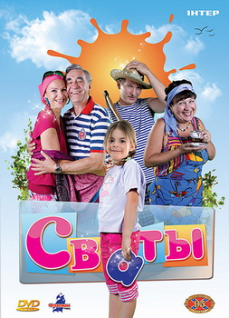

«Сваты» (укр. Свати) — украинский комедийный телесериал студии «Квартал 95». Также были выпущены: мюзикл «Новогодние сваты», спин-офф сериала «Байки Митяя», телепередача «Сваты у плиты», мультсериал «Сватики» и цикл документальных фильмов «Сваты: Жизнь без грима» и «Сваты-6: За кадром».
Премьерные показы сериала «Сваты» в России прошли на телеканале «Россия-1», на Украине — на телеканалах «ICTV» (1 сезон), «Интер» (2—5 сезоны) и «1+1» (6 сезон), в Белоруссии — на телеканале «Беларусь 1».
История создания
В 2008 году в Киеве был снят двухсерийный телефильм «Сваты». Продолжение проекта не планировалось, однако при показе на телевидении фильм получил высокие рейтинги, и поэтому его продлили на второй сезон (который тоже был снят в формате телефильма), а затем и на последующие сезоны (снятые в формате телесериалов). Их съёмки также велись на территории Украины (за редким исключением). В 2010 году «Сваты 4» снимали в Ялте (Крым), а также в Турции[1][2], то есть именно в тех местах, где происходит действие сериала в данном сезоне.
В 2012 году был снят шестой сезон телесериала, который должен был стать последним[3][4]. Однако позже, по многочисленным просьбам телезрителей, создатели проекта решили снять продолжение[5]. В 2015 году авторы заявили о готовности сценария седьмого сезона[6], но его съёмки были отложены из-за политической ситуации на Украине[7], следствием которой, в частности, стал запрет въезда на территорию Украины российским актёрам[8].
